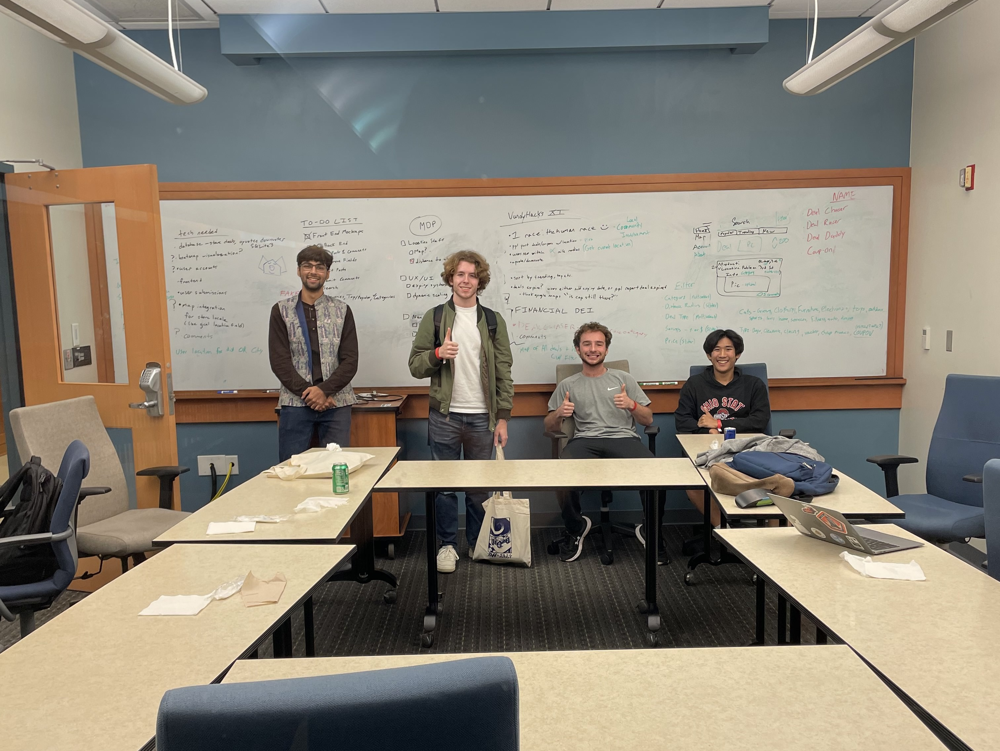
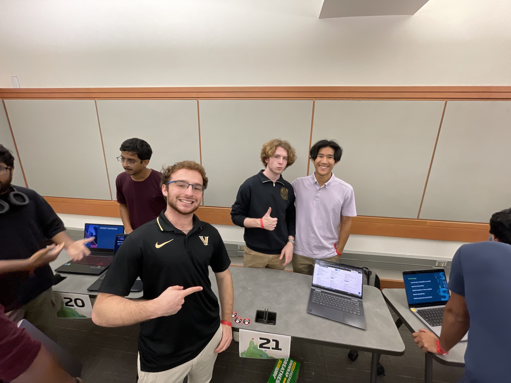

DealRacer was a weekend hackathon project built around a simple idea: make it easier for people to share and discover local money‑saving deals. Our team wanted to tackle the broader challenge of financial inclusion by lowering the barrier to practical, everyday budgeting knowledge. I focused on the backend, bringing our rough concept into a working web app where users could post deals, vote on them, and search by relevance or proximity.
On the backend, I built out the core Django models and views that powered posting, voting, and filtering. I set up endpoints for creating and retrieving deals, implemented sorting logic for score and recency, and handled user interactions like commenting. The frontend team used Bootstrap and vanilla JS, so I also shaped the API responses to be lightweight and easy to consume.
A lot of the work involved keeping our codebase coherent as we all learned web development on the fly. This was the classic hackathon troubles of resolving merge conflicts, aligning on conventions, and making sure our features didn’t break each other while racing the clock.

